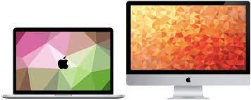
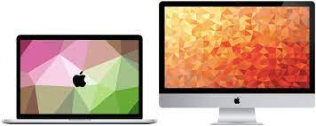
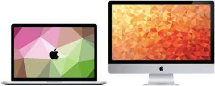
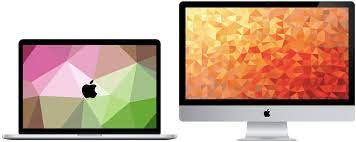

Gallery


 


Apple Computers, Inc. was founded on April 1, 1976, by college dropouts Steve Jobs and Steve Wozniak, who brought to the new company a vision of changing the way people viewed computers. Jobs and Wozniak wanted to make computers small enough for people to have them in their homes or offices.
Here is where the first apple computer was made. The company announced the Macintosh 128K—manufactured at an Apple factory in Fremont, California—in October 1983

 about Steve Jobs
about Steve Jobs
Steve Jobs was a charismatic pioneer of the personal computer era. With Steve Wozniak, Jobs founded Apple Inc. in 1976 and transformed the company into a world leader in telecommunications. Widely considered a visionary and a genius, he oversaw the launch of such revolutionary products as the iPod and the iPhone.

Wozniak (”Woz”) built his first computer when he was 13 years old, and was an electronics prodigy in high school. At 19, he met 14-year-old Steve Jobs and the two teenagers built an electronic “blue box” enabling them to hack the public telephone network and make toll-free calls.
 About Ron Wayne
About Ron Wayne
Ronald Gerald Wayne (born May 17, 1934) is a retired businessman who was one of the co-founders of the Apple Computer Company as a partnership with Steve Jobs and Steve Wozniak. Wayne is also noted for being the first person to leave the company.
Why Ron Wayne is not officially was not part of the company?
Ronald Wayne's stint at Apple did not last very long. After 12 days with the company, on April 12, 1976, Wayne had his name taken off of the contract and sold his 10% stake in Apple back to Steve Wozniak and Steve Jobs for a measly $800.